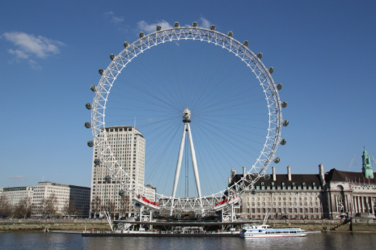
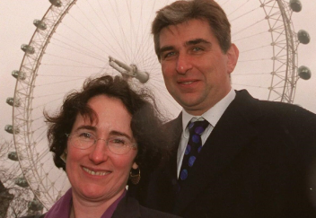
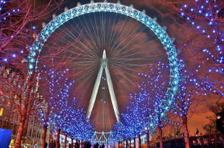
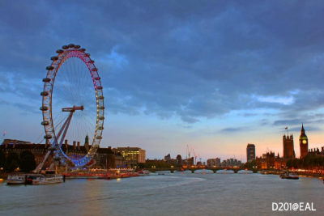
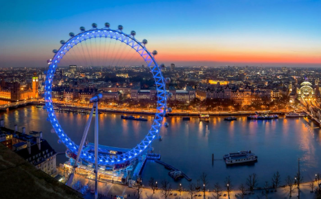

The London Eye for junior classes



The London Eye is a London Ferris wheel located in the Lambeth area on the south bank of the Thames. It is the second tallest in Europe after the Moscow Eye and one of the largest in the world. It was opened on December 31, 1999.
The wheel was created by the architects David Marks and Julia Barfield for a competition held by the Sunday Times in 1993 to design a monumental structure for the new millennium.
Each 10-ton capsule represents one of the 32 boroughs of London and can accommodate up to 25 passengers. The wheel rotates at a constant speed of 26.4 centimeters per second (approximately 0.9 kilometers per hour) in order for one revolution to take approximately 30 minutes.
The London Eye for senior classes


The London Eye is a London Ferris wheel located in the Lambeth area on the south bank of the River Thames. It is the second-largest Ferris wheel in Europe after the Moscow Ferris wheel and one of the largest in the world. It was opened on December 31, 1999, but it was not opened to the general public until March 2000.
From a height of 135 meters (approximately 45 floors), when the weather is clear, you can see almost all of London and its surrounding areas up to 40 kilometers away. This Ferris wheel is a family project by the architects David Marks and Julia Barfield. It was designed for a competition held by the Sunday Times in 1993 to create a monumental structure to mark the new millennium. The project took six years to complete.
Design and Construction
The London Eye has 32 fully enclosed and air-conditioned passenger capsules, made in the shape of an egg. Each 10-ton capsule represents one of the 32 Boroughs (districts) of London and can accommodate up to 25 passengers. The wheel rotates at a constant speed of 26.4 centimeters per second (approximately 0.9 kilometers per hour) to ensure that one rotation takes approximately 30 minutes. When it is necessary to take passengers on board, the wheel does not stop. The speed allows passengers to enter and exit at ground level. The wheel only stops to allow people with disabilities and the elderly to safely board and disembark.
The wheel is supported by spokes and looks like a large bicycle wheel. The London Eye's lighting was replaced with LED lighting by Color Kinetics in December 2006 to enable digital control of the lights. Before the lighting was installed, the wheel was operational until 8 p.m.